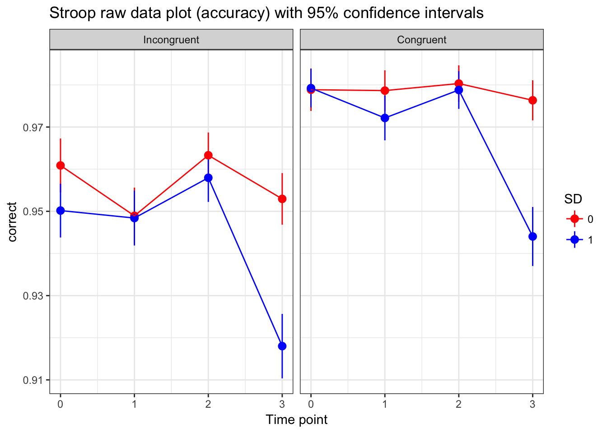
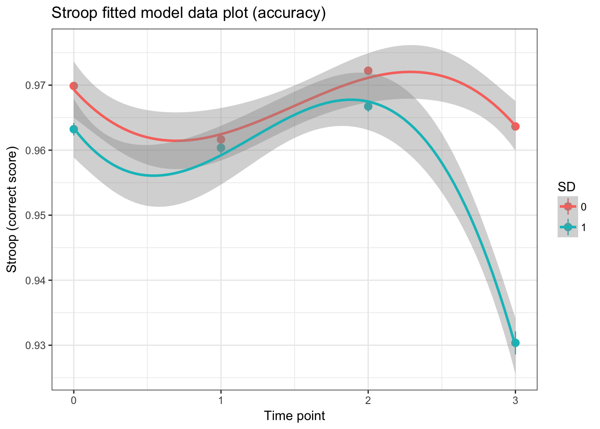
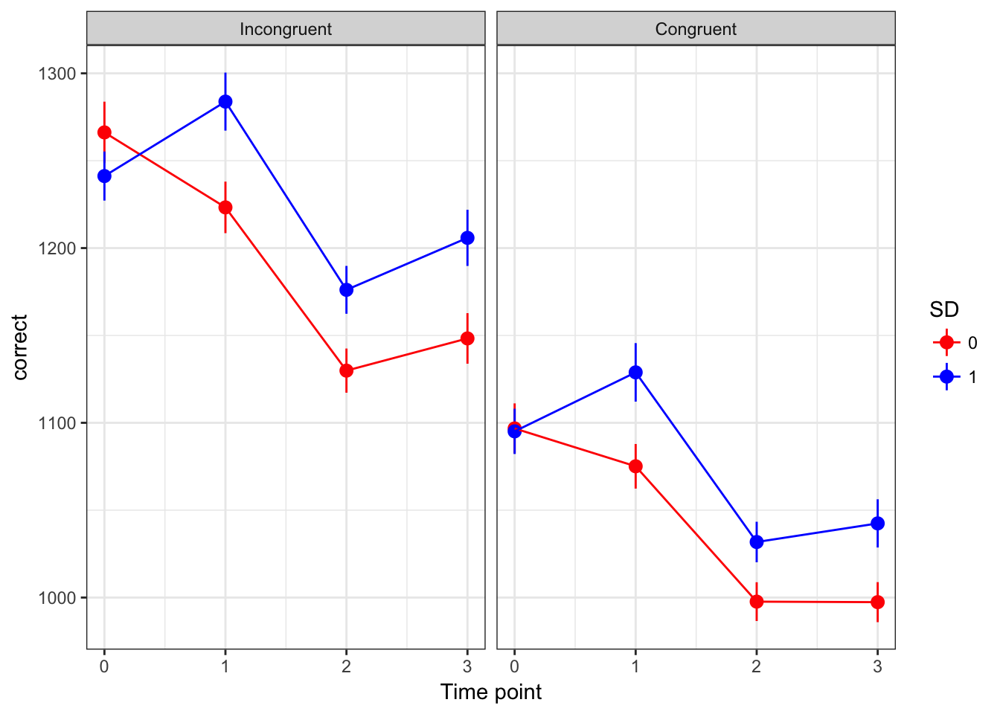
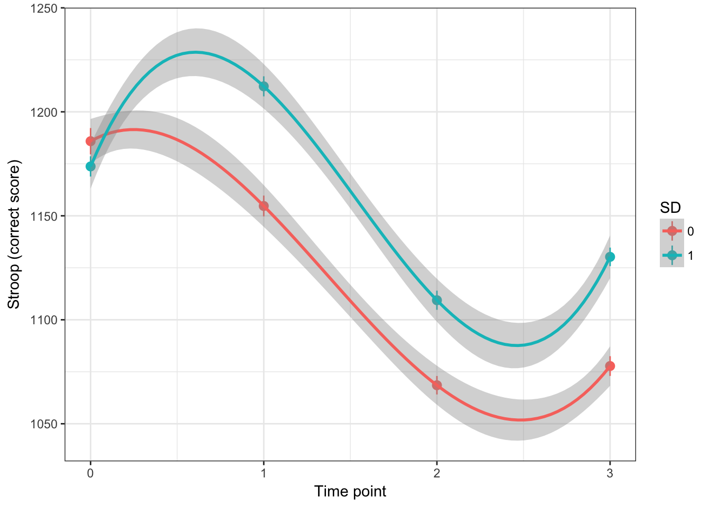

(must respond between 0.1 and 10 seconds)
Stroop_Complete_TIDY <- Stroop_Complete_TIDY[which(Stroop_Complete_TIDY$reaction_time > 100 & Stroop_Complete_TIDY$reaction_time < 10000),]# assessing the best time polynomial
model.3a<-glmer(correct~1 + (1|ID), data=Stroop_Complete_TIDY, family=binomial)
model.3b<-glmer(correct~time + (1|ID), data=Stroop_Complete_TIDY, family=binomial)
model.3c<-glmer(correct~ time + I(time^2) + (1|ID), data=Stroop_Complete_TIDY, family=binomial)
model.3d<-glmer(correct~ time + I(time^2) + I(time^3) + (1|ID), data=Stroop_Complete_TIDY, family=binomial) #definately best but convergence problems
anova(model.3a, model.3b, model.3c,model.3d) #the cubic model is the best## Data: Stroop_Complete_TIDY
## Models:
## model.3a: correct ~ 1 + (1 | ID)
## model.3b: correct ~ time + (1 | ID)
## model.3c: correct ~ time + I(time^2) + (1 | ID)
## model.3d: correct ~ time + I(time^2) + I(time^3) + (1 | ID)
## Df AIC BIC logLik deviance Chisq Chi Df Pr(>Chisq)
## model.3a 2 20418 20436 -10207 20414
## model.3b 3 20381 20408 -10187 20375 39.254 1 3.722e-10 ***
## model.3c 4 20369 20405 -10180 20361 13.625 1 0.0002232 ***
## model.3d 5 20325 20370 -10157 20315 46.302 1 1.013e-11 ***
## ---
## Signif. codes: 0 '***' 0.001 '**' 0.01 '*' 0.05 '.' 0.1 ' ' 1#summary(model.3d)
# not going to add random slopes since convergence is already poor
# how does congruence fit in
model.5a <- glmer(correct~ time + I(time^2) + I(time^3) + (1|ID), data=Stroop_Complete_TIDY, family=binomial)
model.5b <- glmer(correct~ congruent + time + I(time^2) + I(time^3) + (1|ID), data=Stroop_Complete_TIDY, family=binomial)
model.5c <- glmer(correct~ congruent*time + I(time^2) + I(time^3) + (1|ID), data=Stroop_Complete_TIDY, family=binomial) #best
model.5d <- glmer(correct~ congruent*time + congruent*I(time^2) + I(time^3) + (1|ID), data=Stroop_Complete_TIDY, family=binomial)
model.5e <- glmer(correct~ congruent*time + congruent*I(time^2) + congruent*I(time^3) + (1|ID), data=Stroop_Complete_TIDY, family=binomial)
anova(model.5a, model.5b, model.5c,model.5d, model.5e)## Data: Stroop_Complete_TIDY
## Models:
## model.5a: correct ~ time + I(time^2) + I(time^3) + (1 | ID)
## model.5b: correct ~ congruent + time + I(time^2) + I(time^3) + (1 | ID)
## model.5c: correct ~ congruent * time + I(time^2) + I(time^3) + (1 | ID)
## model.5d: correct ~ congruent * time + congruent * I(time^2) + I(time^3) +
## model.5d: (1 | ID)
## model.5e: correct ~ congruent * time + congruent * I(time^2) + congruent *
## model.5e: I(time^3) + (1 | ID)
## Df AIC BIC logLik deviance Chisq Chi Df Pr(>Chisq)
## model.5a 5 20325 20370 -10157 20315
## model.5b 6 20078 20133 -10033 20066 248.2797 1 < 2e-16 ***
## model.5c 7 20074 20138 -10030 20060 6.5062 1 0.01075 *
## model.5d 8 20075 20148 -10030 20059 0.5868 1 0.44367
## model.5e 9 20077 20159 -10030 20059 0.0002 1 0.98885
## ---
## Signif. codes: 0 '***' 0.001 '**' 0.01 '*' 0.05 '.' 0.1 ' ' 1#does how does SD fit in?
model.6a<- glmer(correct~ congruent*time + I(time^2) + I(time^3) + (1|ID), data=Stroop_Complete_TIDY, family=binomial)
model.6b<- glmer(correct~ congruent*time + SD + I(time^2) + I(time^3) + (1|ID), data=Stroop_Complete_TIDY, family=binomial)
model.6c <- glmer(correct~ congruent*time*SD + I(time^2) + I(time^3) + (1|ID), data=Stroop_Complete_TIDY, family=binomial)
model.6d <- glmer(correct~ congruent*time*SD + SD*I(time^2) + I(time^3) + (1|ID), data=Stroop_Complete_TIDY, family=binomial) #best
model.6e <- glmer(correct~ congruent*time*SD + SD*I(time^2) + SD*I(time^3) + (1|ID), data=Stroop_Complete_TIDY, family=binomial)
anova(model.6a,model.6b, model.6c,model.6d,model.6e)## Data: Stroop_Complete_TIDY
## Models:
## model.6a: correct ~ congruent * time + I(time^2) + I(time^3) + (1 | ID)
## model.6b: correct ~ congruent * time + SD + I(time^2) + I(time^3) + (1 |
## model.6b: ID)
## model.6c: correct ~ congruent * time * SD + I(time^2) + I(time^3) + (1 |
## model.6c: ID)
## model.6d: correct ~ congruent * time * SD + SD * I(time^2) + I(time^3) +
## model.6d: (1 | ID)
## model.6e: correct ~ congruent * time * SD + SD * I(time^2) + SD * I(time^3) +
## model.6e: (1 | ID)
## Df AIC BIC logLik deviance Chisq Chi Df Pr(>Chisq)
## model.6a 7 20074 20138 -10030 20060
## model.6b 8 20072 20145 -10028 20056 3.3555 1 0.0669802 .
## model.6c 11 20061 20161 -10020 20039 17.2631 3 0.0006239 ***
## model.6d 12 20054 20163 -10015 20030 9.4705 1 0.0020880 **
## model.6e 13 20055 20173 -10014 20029 1.0275 1 0.3107356
## ---
## Signif. codes: 0 '***' 0.001 '**' 0.01 '*' 0.05 '.' 0.1 ' ' 1predicts score from congruency, time, time2, time3, SD, congruency:time, congruency:SD, SD:time2
#best model
summary(model.6d)## Generalized linear mixed model fit by maximum likelihood (Laplace
## Approximation) [glmerMod]
## Family: binomial ( logit )
## Formula: correct ~ congruent * time * SD + SD * I(time^2) + I(time^3) +
## (1 | ID)
## Data: Stroop_Complete_TIDY
##
## AIC BIC logLik deviance df.resid
## 20053.8 20162.8 -10014.9 20029.8 65453
##
## Scaled residuals:
## Min 1Q Median 3Q Max
## -11.1995 0.1354 0.1692 0.2090 1.0148
##
## Random effects:
## Groups Name Variance Std.Dev.
## ID (Intercept) 0.3409 0.5838
## Number of obs: 65465, groups: ID, 165
##
## Fixed effects:
## Estimate Std. Error z value Pr(>|z|)
## (Intercept) 3.37181 0.10560 31.93 < 2e-16 ***
## congruent 0.75660 0.12244 6.18 6.44e-10 ***
## time -1.06339 0.18523 -5.74 9.41e-09 ***
## SD -0.16470 0.13957 -1.18 0.23797
## I(time^2) 0.97251 0.14794 6.57 4.90e-11 ***
## I(time^3) -0.21419 0.03211 -6.67 2.55e-11 ***
## congruent:time -0.01436 0.06210 -0.23 0.81713
## congruent:SD 0.14765 0.16361 0.90 0.36680
## time:SD 0.32514 0.14172 2.29 0.02178 *
## SD:I(time^2) -0.13238 0.04273 -3.10 0.00195 **
## congruent:time:SD -0.13298 0.07978 -1.67 0.09554 .
## ---
## Signif. codes: 0 '***' 0.001 '**' 0.01 '*' 0.05 '.' 0.1 ' ' 1
##
## Correlation of Fixed Effects:
## (Intr) cngrnt time SD I(t^2) I(t^3) cngrn: cng:SD tim:SD
## congruent -0.353
## time -0.416 0.090
## SD -0.745 0.267 0.253
## I(time^2) 0.205 -0.005 -0.915 -0.081
## I(time^3) -0.122 0.004 0.816 0.017 -0.976
## congrunt:tm 0.294 -0.829 -0.106 -0.222 0.003 -0.003
## congrunt:SD 0.264 -0.749 -0.067 -0.340 0.003 -0.003 0.621
## time:SD 0.413 -0.114 -0.436 -0.519 0.155 0.000 0.135 0.124
## SD:I(tim^2) -0.295 0.003 0.399 0.370 -0.149 -0.014 -0.001 0.019 -0.949
## cngrnt:t:SD -0.228 0.646 0.081 0.286 -0.001 0.001 -0.779 -0.836 -0.153
## SD:I(^
## congruent
## time
## SD
## I(time^2)
## I(time^3)
## congrunt:tm
## congrunt:SD
## time:SD
## SD:I(tim^2)
## cngrnt:t:SD -0.023
## convergence code: 0
## Model failed to converge with max|grad| = 0.0725522 (tol = 0.001, component 1)Stroop_Complete_TIDY$SD <- as.factor(Stroop_Complete_TIDY$SD)
Stroop_Complete_TIDY$congruent <- as.factor(Stroop_Complete_TIDY$congruent)
levels(Stroop_Complete_TIDY$congruent) <- c("Incongruent", "Congruent")
Stroop.final.model <- model.6d
ggplot(Stroop_Complete_TIDY, aes(time, correct, colour=SD)) +
stat_summary(fun.data=mean_cl_normal, fun.args=list(conf.int=0.95), geom="pointrange") +
labs(y="correct", x="Time point") +
facet_wrap( ~ congruent) +
ggtitle("Stroop raw data plot (accuracy) with 95% confidence intervals") +
theme_bw() + scale_color_manual(values=c("red", "blue")) + stat_summary(fun.y=mean, geom="line") 
ggplot(model.6d, aes(time, correct, colour=SD)) +
labs(y="Stroop (correct score)", x="Time point") +
ggtitle("Stroop fitted model data plot (accuracy)") +
theme_bw() + stat_summary(aes(y=fitted(model.6d)), fun.data=mean_cl_normal, fun.args=list(conf.int=0.95), geom="pointrange") + stat_smooth(method = "lm", formula =y ~ poly(x,3)) 
Stroop_complete_correct <- Stroop_Complete_TIDY[which(Stroop_Complete_TIDY$correct == 1),]
# assessing the best time polynomial
model.3a<-lme(reaction_time~1, random=~1|ID, data=Stroop_complete_correct, na.action=na.omit, method="ML")
model.3b<-lme(reaction_time~time, random=~1|ID, data=Stroop_complete_correct, na.action=na.omit, method="ML")
model.3c<-lme(reaction_time~time+I(time^2), random=~1|ID, data=Stroop_complete_correct, na.action=na.omit, method="ML")
model.3d<-lme(reaction_time~time+I(time^2)+I(time^3), random=~1|ID, data=Stroop_complete_correct, na.action=na.omit, method="ML")
anova(model.3a, model.3b, model.3c, model.3d) #the cubic model is the best## Model df AIC BIC logLik Test L.Ratio p-value
## model.3a 1 3 938698.0 938725.1 -469346.0
## model.3b 2 4 938280.5 938316.7 -469136.3 1 vs 2 419.4279 <.0001
## model.3c 3 5 938279.0 938324.2 -469134.5 2 vs 3 3.5600 0.0592
## model.3d 4 6 938095.4 938149.7 -469041.7 3 vs 4 185.5444 <.0001summary(model.3d)## Linear mixed-effects model fit by maximum likelihood
## Data: Stroop_complete_correct
## AIC BIC logLik
## 938095.4 938149.7 -469041.7
##
## Random effects:
## Formula: ~1 | ID
## (Intercept) Residual
## StdDev: 207.7755 418.212
##
## Fixed effects: reaction_time ~ time + I(time^2) + I(time^3)
## Value Std.Error DF t-value p-value
## (Intercept) 1213.1804 16.569799 62699 73.21637 0
## time 122.8851 13.155051 62699 9.34129 0
## I(time^2) -151.2389 11.452700 62699 -13.20552 0
## I(time^3) 34.0435 2.497487 62699 13.63110 0
## Correlation:
## (Intr) time I(t^2)
## time -0.105
## I(time^2) 0.066 -0.961
## I(time^3) -0.050 0.914 -0.989
##
## Standardized Within-Group Residuals:
## Min Q1 Med Q3 Max
## -2.9360617 -0.5215139 -0.2198334 0.2271567 19.8669207
##
## Number of Observations: 62867
## Number of Groups: 165# assessing the best random effects term
model.4a<-lme(reaction_time~time+I(time^2)+I(time^3), random=~1|ID, data=Stroop_complete_correct, na.action=na.omit, method="ML")
model.4b<-lme(reaction_time~time+I(time^2)+I(time^3), random=~time|ID, data=Stroop_complete_correct, na.action=na.omit, method="ML") #best
model.4c<-lme(reaction_time~time+I(time^2)+I(time^3), random=~time+I(time^2)|ID, data=Stroop_complete_correct, na.action=na.omit, method="ML")
#model.4d<-lme(reaction_time~time+I(time^2)+I(time^3), random=~time+I(time^2)+I(time^3)|ID, data=Stroop_complete_correct, na.action=na.omit, method="ML") #convergence problem
anova(model.4a,model.4b, model.4c) #having random slopes for quadratic term for time is best## Model df AIC BIC logLik Test L.Ratio p-value
## model.4a 1 6 938095.4 938149.7 -469041.7
## model.4b 2 8 937176.4 937248.8 -468580.2 1 vs 2 923.0543 <.0001
## model.4c 3 11 936609.5 936709.0 -468293.7 2 vs 3 572.8891 <.0001#Adding congruence
model.5a<-lme(reaction_time~time+I(time^2)+I(time^3), random=~time+I(time^2)|ID, data=Stroop_complete_correct, na.action=na.omit, method="ML")
model.5b<-lme(reaction_time~time+congruent+I(time^2)+I(time^3), random=~time+I(time^2)|ID, data=Stroop_complete_correct, na.action=na.omit, method="ML") #best
model.5c<-lme(reaction_time~time*congruent+I(time^2)+I(time^3), random=~time+I(time^2)|ID, data=Stroop_complete_correct, na.action=na.omit, method="ML")
model.5d<-lme(reaction_time~time*congruent+congruent*I(time^2)+I(time^3), random=~time+I(time^2)|ID, data=Stroop_complete_correct, na.action=na.omit, method="ML")
model.5e<-lme(reaction_time~time*congruent+congruent*I(time^2)+congruent*I(time^3), random=~time+I(time^2)|ID, data=Stroop_complete_correct, na.action=na.omit, method="ML")
anova(model.5a,model.5b, model.5c, model.5d, model.5e) ## Model df AIC BIC logLik Test L.Ratio p-value
## model.5a 1 11 936609.5 936709.0 -468293.7
## model.5b 2 12 934486.1 934594.6 -467231.0 1 vs 2 2125.4421 <.0001
## model.5c 3 13 934487.7 934605.3 -467230.8 2 vs 3 0.3886 0.5330
## model.5d 4 14 934486.4 934613.1 -467229.2 3 vs 4 3.2425 0.0718
## model.5e 5 15 934487.4 934623.1 -467228.7 4 vs 5 1.0540 0.3046#adding sleep condition
model.6a<-lme(reaction_time~time+congruent+I(time^2)+I(time^3), random=~time+I(time^2)|ID, data=Stroop_complete_correct, na.action=na.omit, method="ML")
model.6b<-lme(reaction_time~time+SD+congruent+I(time^2)+I(time^3), random=~time+I(time^2)|ID, data=Stroop_complete_correct, na.action=na.omit, method="ML")
#model.6c<-lme(reaction_time~time*SD+congruent+I(time^2)+I(time^3), random=~time+I(time^2)|ID, data=Stroop_complete_correct, na.action=na.omit, method="ML") #convegence problem
model.6d<-lme(reaction_time~time*SD+congruent+SD*I(time^2)+I(time^3), random=~time+I(time^2)|ID, data=Stroop_complete_correct, na.action=na.omit, method="ML")
model.6e<-lme(reaction_time~time*SD+congruent+SD*I(time^2)+SD*I(time^3), random=~time+I(time^2)|ID, data=Stroop_complete_correct, na.action=na.omit, method="ML") #best
model.6f<-lme(reaction_time~time*SD*congruent+SD*I(time^2)+SD*I(time^3), random=~time+I(time^2)|ID, data=Stroop_complete_correct, na.action=na.omit, method="ML")
anova(model.6a,model.6b,model.6d,model.6e,model.6f)## Model df AIC BIC logLik Test L.Ratio p-value
## model.6a 1 12 934486.1 934594.6 -467231.0
## model.6b 2 13 934487.0 934604.6 -467230.5 1 vs 2 1.092114 0.2960
## model.6d 3 15 934481.2 934616.9 -467225.6 2 vs 3 9.755380 0.0076
## model.6e 4 16 934467.9 934612.7 -467218.0 3 vs 4 15.254021 0.0001
## model.6f 5 19 934471.8 934643.8 -467216.9 4 vs 5 2.110370 0.5498summary(model.6e)## Linear mixed-effects model fit by maximum likelihood
## Data: Stroop_complete_correct
## AIC BIC logLik
## 934467.9 934612.7 -467218
##
## Random effects:
## Formula: ~time + I(time^2) | ID
## Structure: General positive-definite, Log-Cholesky parametrization
## StdDev Corr
## (Intercept) 241.70369 (Intr) time
## time 167.43697 -0.345
## I(time^2) 52.53639 0.189 -0.932
## Residual 403.95866
##
## Fixed effects: reaction_time ~ time * SD + congruent + SD * I(time^2) + SD * I(time^3)
## Value Std.Error DF t-value p-value
## (Intercept) 1313.2054 28.25648 62695 46.47448 0.0000
## time 16.3752 27.95782 62695 0.58571 0.5581
## SD1 -33.6676 38.86939 163 -0.86617 0.3877
## congruentCongruent -150.5781 3.23789 62695 -46.50499 0.0000
## I(time^2) -91.6303 17.73915 62695 -5.16543 0.0000
## I(time^3) 24.2737 3.56830 62695 6.80258 0.0000
## time:SD1 183.5921 38.07536 62695 4.82181 0.0000
## SD1:I(time^2) -110.8051 24.43465 62695 -4.53475 0.0000
## SD1:I(time^3) 19.3654 4.95825 62695 3.90570 0.0001
## Correlation:
## (Intr) time SD1 cngrnC I(t^2) I(t^3) tm:SD1
## time -0.343
## SD1 -0.725 0.249
## congruentCongruent -0.054 0.002 0.001
## I(time^2) 0.157 -0.872 -0.114 -0.002
## I(time^3) -0.076 0.659 0.055 0.001 -0.930
## time:SD1 0.252 -0.734 -0.329 -0.001 0.640 -0.484
## SD1:I(time^2) -0.114 0.633 0.141 0.001 -0.726 0.675 -0.867
## SD1:I(time^3) 0.055 -0.474 -0.062 0.000 0.669 -0.720 0.651
## SD1:I(^2
## time
## SD1
## congruentCongruent
## I(time^2)
## I(time^3)
## time:SD1
## SD1:I(time^2)
## SD1:I(time^3) -0.930
##
## Standardized Within-Group Residuals:
## Min Q1 Med Q3 Max
## -3.1606743 -0.5071494 -0.1980547 0.2163997 19.9174663
##
## Number of Observations: 62867
## Number of Groups: 165Stroop.final.model <- model.6e
ggplot(Stroop_complete_correct, aes(time, reaction_time, colour=SD)) +
stat_summary(fun.data=mean_cl_normal, fun.args=list(conf.int=0.95), geom="pointrange") +
labs(y="correct", x="Time point") +
facet_wrap( ~ congruent) +
theme_bw() + scale_color_manual(values=c("red", "blue")) + stat_summary(fun.y=mean, geom="line") 
ggplot(Stroop_complete_correct, aes(time, reaction_time, colour=SD)) +
labs(y="Stroop (correct score)", x="Time point") +
theme_bw() + stat_summary(aes(y=fitted(Stroop.final.model)), fun.data=mean_cl_normal, fun.args=list(conf.int=0.95), geom="pointrange") + stat_smooth(method = "lm", formula =y ~ poly(x,3)) 